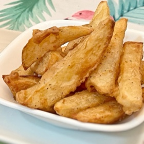

← All recipes
Fried Potato Wedges

Fried potato wedges from Reddit /r/Recipes
Ingredients
- • russet potatoes, peeled (about 6 medium potatoes)
- • 1 c all-purpose flour
- • 1 tsp garlic powder
- • 1 tsp onion powder
- • 1 tsp paprika (smoked if you got it)
- • 2 tsp salt
- • 3/4 c water or as needed. Usually it’s closer to a cup+ but it depends on the type of flour used. The batter should run off but a decent portion should stick in a light coat.
Directions
- • Slice potatoes into wedges (cut in half then cut on a bias), and place them into cold salted water for a half hour or so. Also so they won’t turn brown while you prepare the oil.
- • Heat oil in a large skillet over medium-high heat to 325. While the oil is heating, sift the flour, garlic powder, onion powder, salt, and paprika into a large bowl. Gradually stir in enough water so that the mixture can be drizzled from a spoon.
- • Submerge the potatoes into the batter, and then carefully drop into the oil one by one. Do not drop in groups as they’ll stick together.
- • Fry in batches for approx five minutes. This step is just to set the dredge and slightly cook the fries. It’s okay if they still appear to be not have any color. Once all fries have gone through the first fry, turn the oil heat up to 375. Fry all the fries an additional five minutes or so, or until a deep golden brown.
- • Remove from the oil into a bowl and immediately salt and toss to coat salt evenly.